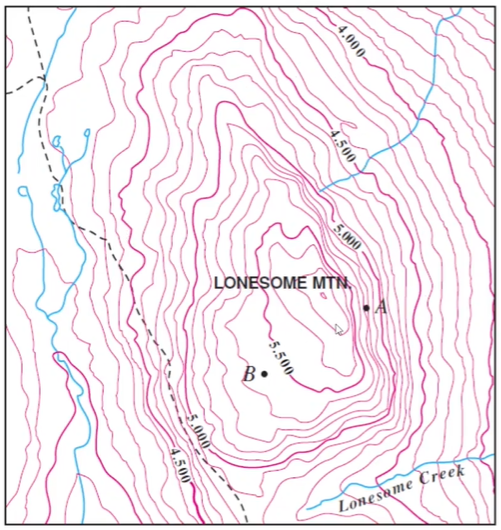
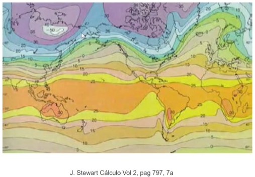
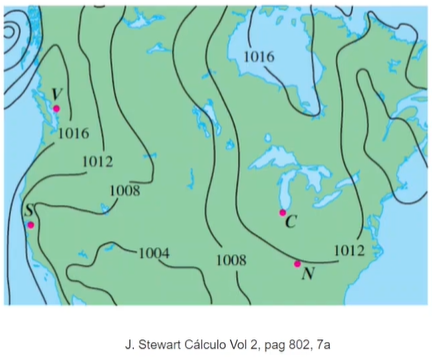
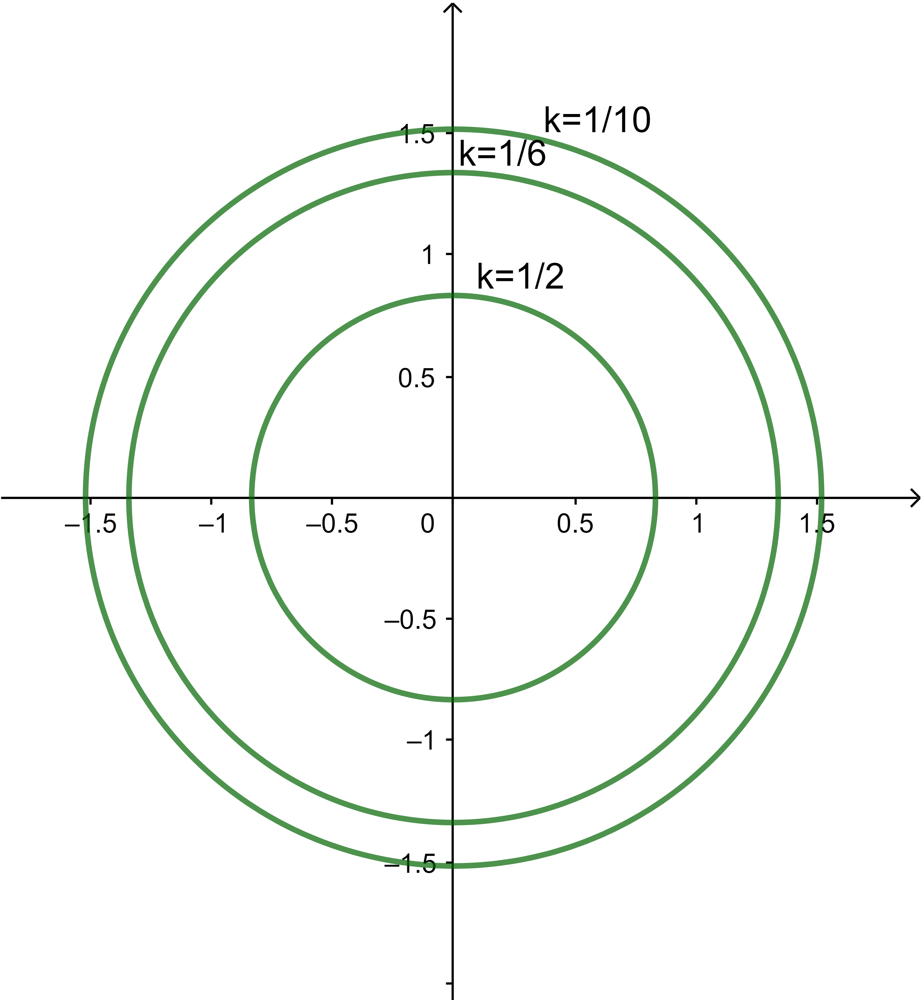
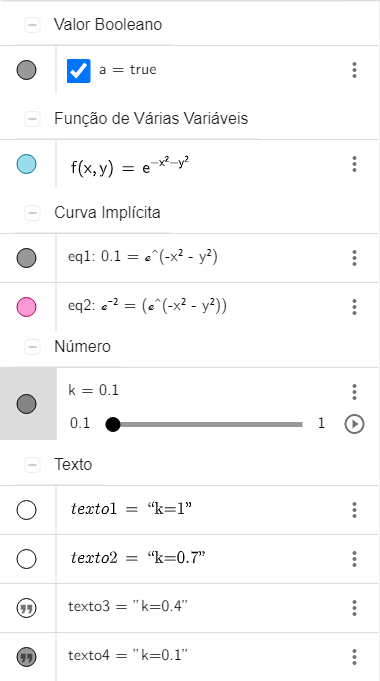

Funções escalares de várias variáveis
Mapa de contorno (atividade)
Mapa topográfico: Vocês com certeza já viram mapas como o mapa a seguir.

As curvas do mapa representam pontos que possuem a mesma altura.
Mapa de temperaturas: As curvas do mapa a seguir representam os pontos que têm a mesma temperatura média. Estas curvas se chamam isotérmicas.

Mapa de pressão atmosférica: As curvas do mapa a seguir representam os pontos que têm a mesma pressão atmosférica. Estas curvas se chamam isobáricas.

O que todos esses três mapas que eu já apresentei têm em comum? Todos são mapas de contorno. As curvas de pontos com as mesmas alturas, temperaturas ou pressões atmosféricas
são as chamadas curvas de nível.
Atividades
Questão 1
A profundidade de um poço mineiro é dada pela equação *(f(x,y)=-\sqrt{4-x^2-y^2})*.
Esboce o mapa de contorno e identifique o nível de profundidade do ponto *((0,\sqrt{3}))*
onde foi encontrado mineral valioso.
Resolução em vídeo
Questão 2
Esboce com o Geogebra o mapa de contorno da função *(f(x,y)=\epsilon^{-x^2-y^2})*. Identifique com uma cor diferente a curva de nível que passa pelo ponto *((1,1))*. Esboce o mapa de contorno junto com o gráfico da função em uma janela de visualização 3D. Observe como as curvas de nível moram no domínio. O nível é um valor da imagem da função. Cada curva é a projeção no plano *(xy)* da interseção do gráfico da função com o plano *(z=k)*.Tutorial de como criar curvas de nível no Geogebra
Neste caso, observe que *(\operatorname{Dom}\left(f\right)=\mathbb{R}^{2})*. Quanto à imagem de *(f)*, note que *(−(x^2 + y^2) ≤ 0, ∀ (x, y) ∈ \mathbb{R}^2)*.
Desta forma, tomando a exponencial de ambos os lados da inequação, encontramos que *(e−(x^2+y^2) ≤ 1, ∀ (x, y) ∈ \mathbb{R}^2)*. Além disso, como a função exponencial é sempre maior do que zero,
temos que *(0 < e−(x^2+y^2) ≤ 1, ∀ (x, y) ∈ \mathbb{R}^2)*.
Concluímos assim que, *(Im(f) = (0, 1])*. Portanto, se *(k ∈ (0, 1])*, o conjunto de nível *(k)* de *(f)* é dado por *(\mid C_{k}\left(f\right)=\left\{(x, y) \in \mathbb{R}^{2} \mid e^{-\left(x^{2}+y^{2}\right)}=k\right\})*
Observe que
*(e^{-\left(x^{2}+y^{2}\right)}=k \Leftrightarrow-\left(x^{2}+y^{2}\right)=\ln k \Leftrightarrow x^{2}+y^{2}=-\ln k)*
Desta forma, para *(k = 1)*, temos que
*(x^{2}+y^{2}=-\ln 1=0 \Leftrightarrow x=0 \text { e } y=0)*
de modo que
*(C_{1}\left(f\right)=\{(0,0)\})*
e, para *(k ∈ (0, 1))*, temos que
*(C_{k}\left(f\right)=\left\{(x, y) \in \mathbb{R}^{2} \mid x^{2}+y^{2}=-\ln k=\ln \frac{1}{k}\right\})*
isto é, as curvas de nével *(k)* de *(f)*, para *(k ∈ (0, 1))* são circunferências de centro na origem e raio *(\sqrt{-\ln k}=\sqrt{\ln \frac{1}{k}})*.
Vejamos a seguir exemplos de algumas curvas de nível de *(f)*.
Para *(k = 1)*, temos o ponto *((x, y) = (0, 0))*;
para *(k = 1/2)*, temos a circunferência *(x^{2}+y^{2}=-\ln \frac{1}{2}=\ln 2)*;
para *(k = 1/6)*, temos a circunferência *(x^{2}+y^{2}=-\ln \frac{1}{6}=\ln 6)*;
para *(k = 1/10)*, temos a circunferência *(x^{2}+y^{2}=-\ln \frac{1}{10}=\ln 10)*.
As curvas de nível de *(f)* encontram-se esboçadas abaixo:

Observe que precisamos fazer pequenas manipulaçõoes para encontrar a imagem de *(f)*. Caso tivssemos tido alguma dificuldade em descobrir que *(0 < e^{-\left(x^{2}+y^{2}\right)} < 1)*,
*(\forall(x, y) \in \mathbb{R}^{2})*, um procedimento que podemos adotar é supor que *(k)* é um elemento na imagem da função e partir para a descoberta dos conjuntos de nível.
No caso, apenas suporíamos que *(k \in \operatorname{Im}\left(f\right))* e tentaríamos resolver a equação *(e^{-\left(x^{2}+y^{2}\right)}=k)*. Durante o processo, as restrições sobre
*(k)* se evidenciariam. De fato, constatamos que só há soluções *((x, y) \in \operatorname{Dom}\left(f\right)=\mathbb{R}^{2})* para a equação *(e^{-\left(x^{2}+y^{2}\right)}=k \Leftrightarrow x^{2}+y^{2}=-\ln k)*,
quando *(-\ln k \geq 0)*. Desta forma, devemos ter *(-\ln k \geq 0 \Leftrightarrow \ln k \leq 0 \Leftrightarrow 0 < k \leq 1)*.
O que fizemos de uma forma reversa foi descobrir que solucionamos a equação *(e^{-\left(x^{2}+y^{2}\right)} = k, (x,y) \in \mathbb{R}^{2})* se e somente se *(0 < k \leq 1)* Isto equivale
a dizer que *(\operatorname{In}\left(f\right)=(0,1])*.
Para o esboço do mapa de contorno, devemos adicionar alguns elementos a janela algébrica no Geogebra. O primeiro será a função dada,
adicionamos na entrada a seguinte expressão:
*(f(x,y)=e^{-x^2-y^2})*
Apertamos o botão "Enter" e já aparecerá o mapa de contorno na janela de visualização 3D.
Posteriormente, iremos adicionar as curvas de nível, para tal devemos adicionar a entrada a equação da função e devemos igualar essa equação a *(k)* (que nada mais é que o conjunto imagem da função):
*(k=e^{-x^2-y^2})*. Devemos adicionar um "Controle deslizante" a *(k)*, para que possamos modificar os valor de *(k)* na função, então, adicionamos a entrada "*(k=)*".
Em seguida, para
identificar e demonstrar a curva de nível que passa pelo ponto *((1,1))* no Geogebra, precisamos, inicialmente, substituir os pontos *((1,1))* na função dada.
Assim sendo, temos que *(f(1,1))=e^{-1^2-1^2}=e^{-2})*. Agora que temos o resultado da equação, devemos adicionar no Geogebra a entrada
*(e^{-x^2-y^2}=e^{-2})*, para assim gerar a curva que passa pelo ponto *((1,1))*. Em sequência, apenas modificamos a cor dessa entrada e adicionamos uma caixa para exibir ou esconder um objeto associado a entrada.
Por fim, para facilitar a orientação, adicionamos textos ao gráfico que expressam os valores de *(k)*. Então, acrescentamos texto1="*(k)*=(valor associado a k)" a entrada, devemos fazer isso com todos os valor de k,
dentro do intervalo escolhido e de seus devidos incrementos. Além disso, é necessário adicionar uma condição para existência do objeto e essa condição também será definida por *(k)*=(valor associado a k)
(A Janela Algébrica deve ter no mínimo os elementos da imagem a baixo).

Esboço no Geogebra
Questão 3
Nos dois games abaixo, você terá que identificar e relacionar o mapa de contorno com suas curvas de nível.
No primeiro jogo, terá que achar os pares correspondentes dos mapas de contorno com suas devidas curvas de nível.
Já no segundo jogo, você terá que relacionar o gráfico das curvas de nível com seu devido mapa de contorno. Você descobrirá a importância do nível nas curvas de nível!
Questionário
Esse é um questionário de múltipla escolha. Logo selecione a resposta marcando ao lado. Ao final clique em obter resultado para a correção das respostas enviadas.
Avaliação da atividade Mapa de contorno
Nos dê um feedback sobre as atividades do site. Sua opinião é muito importante para nós!